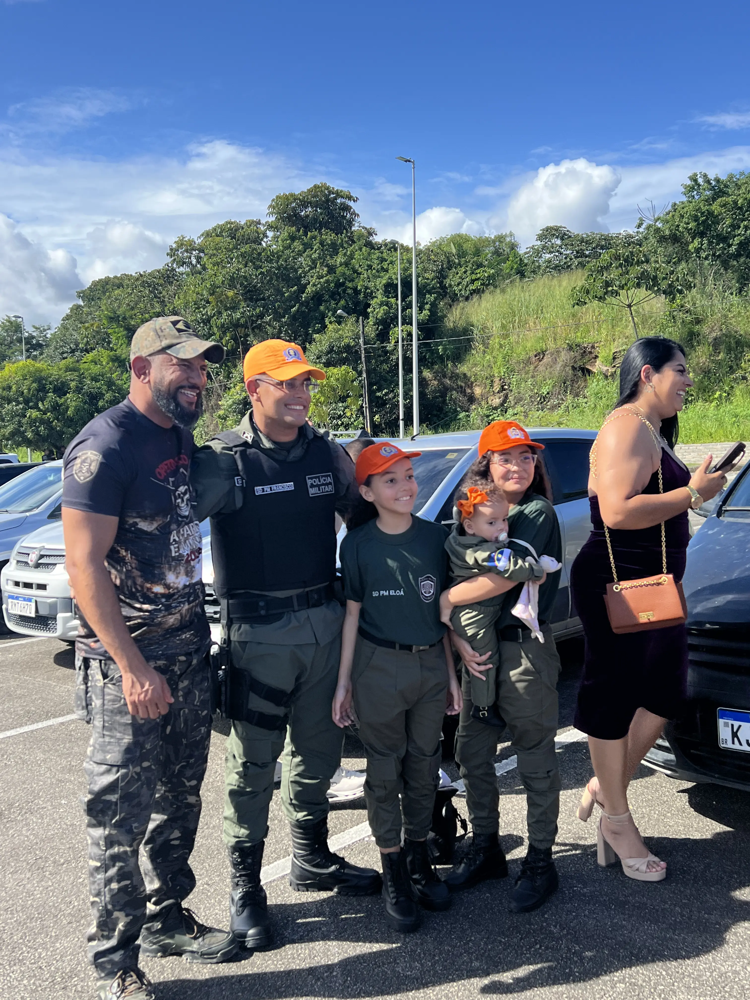
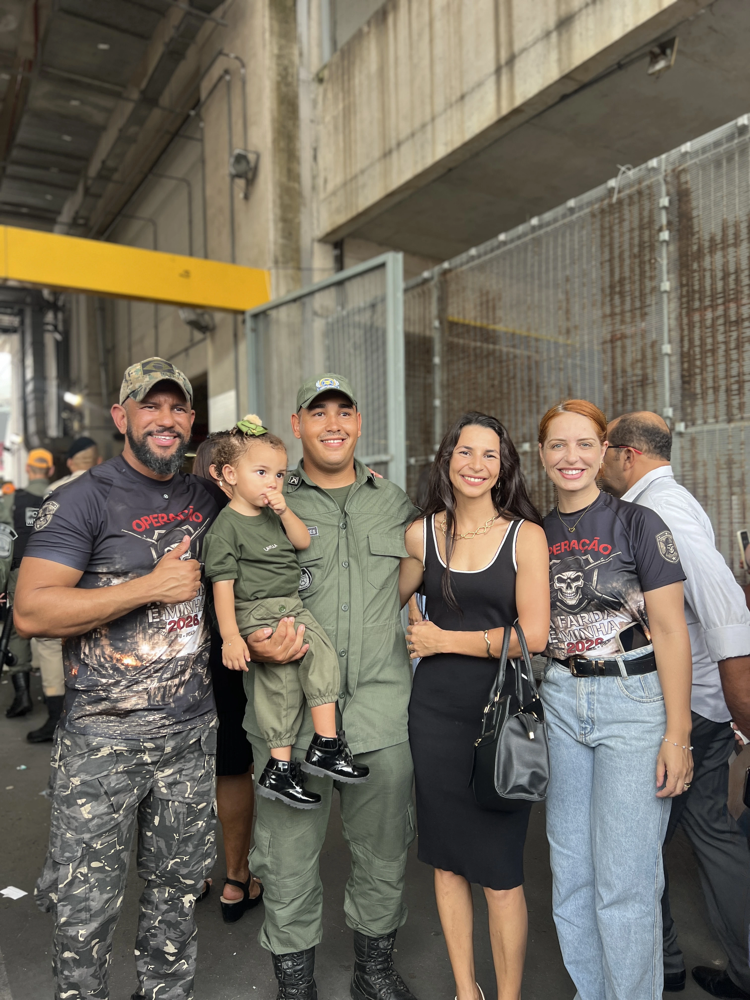
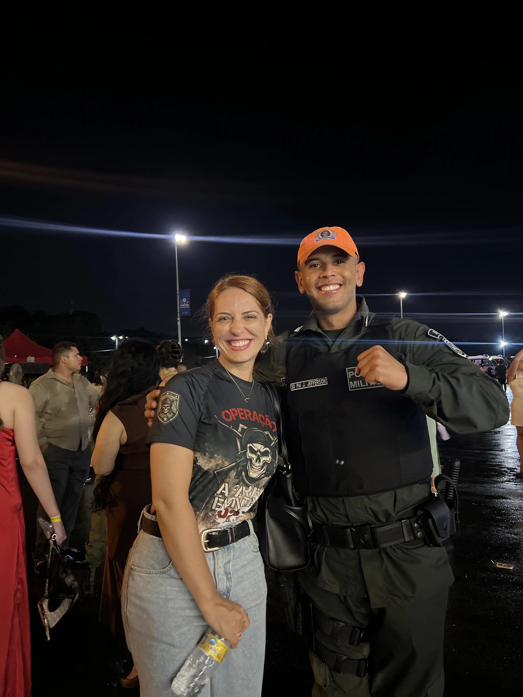

Estuda muito, mas não vê resultado
Você passa horas em frente à apostila e, quando faz uma simulada, erra o que parecia básico. Falta direção, não força de vontade.

A preparação mais completa para vestir a sua tão sonhada farda da Polícia Militar de Pernambuco. Direto com quem já passou.
 PROF. EVERTON MOTA
MENTOR · CPPEM CONCURSOS
PROF. EVERTON MOTA
MENTOR · CPPEM CONCURSOS
Aprovado em 15 concursos públicos, o Prof. Everton Mota não ensina pelo livro. Ensina pela estrada que ele mesmo caminhou. Há mais de 7 anos forma candidatos para carreiras policiais no Nordeste, com mais de 14 mil aprovados.
Na sua preparação para a PMPE, você não vai assistir mais uma aula gravada e ficar sozinho. Vai ter o professor, ao vivo, todo mês, te corrigindo, te direcionando, e respondendo pessoalmente o que está travando seu estudo.
A maioria dos candidatos chega no dia da prova sem ter feito o básico certo. Sem cronograma, sem revisões, sem ninguém pra mostrar onde está errando. E a farda não espera ninguém.
Você passa horas em frente à apostila e, quando faz uma simulada, erra o que parecia básico. Falta direção, não força de vontade.
Estuda o que vem na cabeça, sem meta diária, sem ordem. Quando vê, passou um mês e o conteúdo essencial nem foi tocado.
Sem grupo, sem mentor, sem ninguém pra te puxar quando bate a vontade de desistir. Ninguém atravessa essa estrada sozinho.
O edital já saiu. Quem está organizado já largou na frente. Quem está perdido vai correr atrás.
A Polícia Militar de Pernambuco liberou 1.250 vagas para Soldado. Com uma preparação focada e direcionada, você fica pronto para disputar cada uma delas.
Cada parte foi montada pra cobrir um ponto fraco do candidato comum. Quem entra aqui não estuda mais no escuro.
Você se conecta diretamente com o Prof. Everton. Tira dúvidas em tempo real, corrige rotas e ajusta o estudo com quem já passou pelo caminho e foi aprovado.
Você informa o tempo que tem disponível e recebe um cronograma feito sob medida. Estuda 2h por dia? 6h? Tanto faz. O plano se ajusta a você, não o contrário.
Você acessa o acervo completo de aulas e materiais complementares voltados ao edital da PMPE. Sem precisar caçar conteúdo solto pela internet.
Aulas, Questões, Simulados e Revisões (AQSR) entregues em metas diárias. Você abre e já sabe exatamente o que fazer no dia. Sem perder tempo decidindo.
Você acompanha sua taxa de acerto em questões matéria por matéria. Vê o que está crescendo, o que precisa de revisão, e prova pra si mesmo que está evoluindo de verdade.
Convivência diária com mentores, monitores, equipe pedagógica e outros alunos da turma. Você não vai estudar sozinho. Vai estudar cercado de gente que quer o mesmo que você.
Histórias reais de quem chegou onde você quer chegar com a metodologia do Prof. Everton.





Preencha seus dados e fale agora com a nossa equipe.